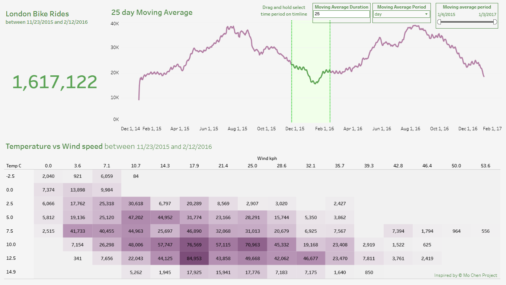

Data cleaning in Python and Tableau visualization
Customer's Task
We want to understand how many people actually use bike-sharing in London over a certain period of time and under various weather conditions to understand what the future growth trend for this market looks like.
Data acquisition
Required data we could find in Kaggle's London bike sharing dataset in csv format.
Python
This data can easily be processed using Excel or SQL, but in this case, we will use the pandas library in Python. The Jupyter Notebook interactive development environment was used for this task. Raw data and .ipynb files could be found in this GitHub repository.
Tableau
Working in Tableau it`s prety intuitive and almost self-explanatory when working with clean data. But for learning purposes I'l explain whole process in detail. Also this project was heavily inspired by Mo Chen project.

Creating User-Defined Parameters
To start, create two parameters to make the moving average dynamic. Right-click anywhere in the Data pane and select Create Parameter. Name the first parameter moving average period, set the data type to String, and choose a List allowable values configuration with three items: day, week, and month.
Next, create the second parameter named moving average duration. Set its data type to Integer and set the current value to 10. Once both parameters are created, right-click on each of them in the Data pane and select Show Parameter.
Preparing Date Field and Basic Line Chart
Locate the time field in your Data pane. If it is currently set to a string type (indicated by an ABC icon), right-click it, go to Change Data Type, and select Date.
Now, create a new calculated field named moving average period using the formula DATETRUNC([moving average period], [time]). Change its data type to Date if necessary. Right-click and drag this new moving average period field into the Columns shelf, setting it to Continuous. Drag Count (or your measure count) onto the Rows shelf to build a simple line chart.
Set Up the Set and Range Calculations
Right-click the moving average period measure, go to Create, and select Set. Name it moving average period set and click OK without selecting any values for now.
Create a calculated field named Min month using the formula { MIN(IF [moving average period set] THEN [moving average period] END) }. Duplicate this field, rename it to Max month, and edit its formula to replace MIN with MAX. Drag both Min month and Max month onto the Detail shelf on the Marks card, ensuring both are set to Continuous. Finally, right-click moving average period set in the Data pane and select Show Set.
Configure Worksheet Actions and Highlight Visuals
Go to the top menu, select Worksheet > Actions, and add a Change Set Values action. Name it update moving average period set, target your moving average period set, and set the option for clearing the selection to Keep set values.
To highlight selected ranges visually, switch to the Analytics tab on the left, drag Reference Band onto the chart target table, and base it on moving average period. Set Band From to Min month and Band To to Max month (removing all labels and tooltips). Customize the band using a dashed line with a light fill color, and uncheck Show recalculated value.
To color-code the selected range, create a calculated field named in range with the expression [moving average period] >= [Min month] AND [moving average period] <= [Max month]. Convert this field to a measure attribute by dragging it to the Color shelf, clicking its drop-down menu, and selecting Attribute.
Implement Dynamic Moving Average
To transform your count into a moving average, click the drop-down on the SUM(Count) field in the Rows shelf, select Quick Table Calculation, and choose Moving Average. Drag this field back into the Data pane to create a reusable measure and name it moving average rights.
Right-click and edit moving average rights to make the calculation dynamic. Modify the window calculation formula so that the offset uses your parameter: replace the fixed value with -[moving average duration] + 1. Test your setup by altering the duration and period parameter controls to confirm the chart updates smoothly.
Build Total Rides Summary Worksheet
Rename your primary sheet to Moving Average and open a new worksheet named Total rides. Create a calculated field called in range rights using the formula { SUM(IF [in range] THEN [Count] END) }.
Drag in range into the Filters shelf and select True. Add Min month and Max month to the Detail shelf as Continuous fields. Place in range rights onto the Text/Label shelf. Edit the worksheet title to show dynamic text: London bike rides between Min month and Max month.
Build Temperature vs. Wind Speed Heat Map
Create a new worksheet named Heatmap. To group dense continuous variables, right-click temperature real, select Create Bins, and name it temp c. Do the same for wind speed kph, naming the bin field wind in kph.
Drag wind in kph to Columns and temp c to Rows. Drag Count to the Color shelf, change the mark type on the Marks card to Square, and set the view layout to Entire View. Apply the same filters by dragging in range (set to True), Min month, and Max month onto the appropriate shelves, then drag Count to the Label shelf.
Creating Tooltip Breakdown Charts
Open a new worksheet named 2D weather. Drag weather to Rows and Count to Columns, sort in descending order, set to Entire View, and place weather on Color. Add the in range filter (True) alongside Min month and Max month on Detail, then turn on labels.
Open another worksheet named Hour. Drag time to Rows (set to Discrete Hour) and Count to Columns, set the mark type to Bar, set to Entire View, and place time on Color. Apply the same in range, Min month, and Max month filters, then enable labels.
Format Worksheets and Insert Tooltip Visuals
Format the background shading, borders, and line properties across all worksheets to maintain a clean appearance. For your Moving Average sheet, edit the primary line colors for true/false states, adjust the reference band fill, and set the worksheet title dynamically using your parameters: < moving average duration> < moving average period> moving average.
Navigate to the Moving Average sheet's Tooltip card. Remove unnecessary technical fields, keep the primary date and measure info, and insert the two breakdown charts via Insert > Sheets (2D weather at 300x240 and Hour at 300x400). Repeat this tooltip insertion for the Heatmap worksheet so both breakdown charts appear when hovering over heatmap squares.
Assemble and Interlink the Final Dashboard
Create a new Dashboard, set its size to Fixed Size (Generic Desktop), and set the dashboard background color. Drag Total rides, Moving Average, and Heatmap into the layout. Set the moving average duration and moving average period parameter controls to Floating and place them neatly near the top.
Go to Dashboard > Actions and add or edit the set action: set the source sheet to Dashboard 1 (specifically targeting the Moving Average sheet) and the target set to moving average period set. Finally, display the moving average period date range filter on the dashboard as a floating control. Verify that selecting time windows on the timeline or adjusting parameter inputs dynamically updates all totals, heatmaps, and embedded tooltips across the dashboard.